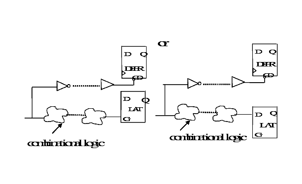

| Description | This rule fires when Leda detects a reset or set signal that interacts with other latch pins in the design. This can cause sequence errors and data failures. |
| Policy | DESIGN |
| Ruleset | RESETS |
| Language | VHDL/Verilog |
| Type | Hardware |
| Severity | Error |
This is an example of invalid Verilog code, followed by a circuit diagram that illustrates the problem:
module ntl_rst18_top (din, rst, clk, dout);
input din, rst, clk;
output dout;
reg dout, net1, net2;
wire rst2,net03;
assign rst2 = rst & net03;
always @(posedge clk)
begin
if (rst)
dout <= 0;
else dout <= din;
end
always @(rst2 or net1)
begin
if (rst2) // NTL_RST18 fires -- reset signal interacts with latch
net2 <= net1;
end
endmodule
